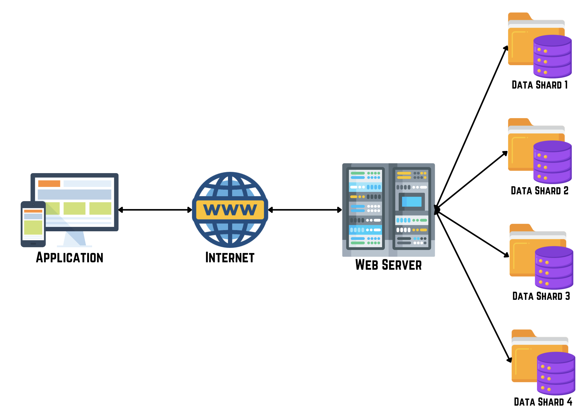

In large-scale systems, database sharding is crucial for managing vast amounts of data effectively. As applications grow, traditional databases may struggle with performance. Database sharding addresses this by breaking data into smaller parts called shards, each stored on a separate database server. This approach improves performance and scalability by dividing a large database into smaller parts. Each shard contains a subset of the overall data, helping manage data growth and enhancing access speed.

Benefits of Database Sharding
- Scalability: Easier handling of more data by spreading it across multiple servers.
- Performance: Improved speed of data read and write operations by distributing the workload.
- Availability: Reduced risk of data loss if one server fails, as data is distributed across multiple shards.
- Flexibility: Ability to store data closer to users globally, improving response times.
How Database Sharding Works
Key Considerations:
- Choosing a Sharding Key: Crucial for evenly distributing data among shards to prevent overloading some shards.
- Maintaining Data Consistency: Ensuring all data across shards is accurate and up-to-date, even as data changes.
Types of Sharding:
- Horizontal Sharding: Splits data based on rows or entities to balance the workload.
- Vertical Sharding: Divides data based on columns, allowing different shards to store different columns of the same table.
- Composite Sharding: Combines horizontal and vertical methods for flexibility in data distribution.
Challenges of Database Sharding
- Complexity: Managing data distribution and ensuring consistency becomes more complex.
- Data Skew: Uneven distribution of data can lead to performance issues if not managed properly.
- Maintenance: Adding or removing shards requires careful planning to avoid disruptions.
Best Practices for Database Sharding
- Plan Early: Design databases with sharding in mind from the start.
- Monitoring: Use tools to track shard performance and automate scaling as needed.
- Backup and Recovery: Develop plans to backup and recover data, considering data spread across shards.
- Testing: Thoroughly test your sharding setup to ensure it meets system requirements.
Database sharding is a powerful method for managing large amounts of data and improving system performance. By understanding how to shard databases, selecting the right strategy, and addressing challenges effectively, you can build a scalable and efficient database system that supports your application's growth.